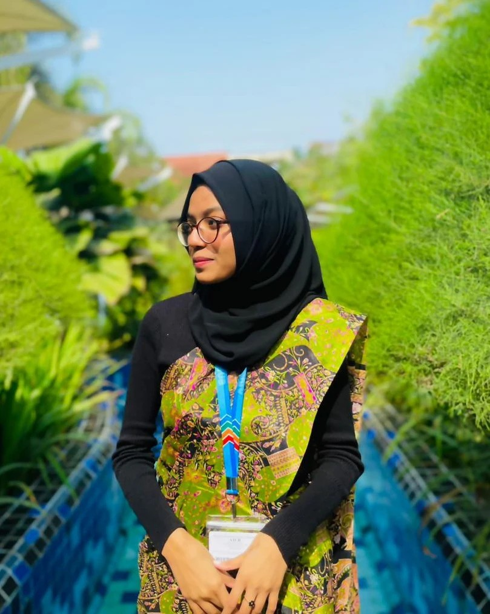

Fahmida Rahman
📍 Bangladesh
📞 019***
📧 fahmidarahman9620@gmail.com
Career Objective
Motivated and detail-oriented Computer Science and Engineering student with a strong academic background and hands-on project experience in software development, database management, and UI/UX design. Passionate about building efficient, user-friendly applications and continuously learning new technologies to enhance technical and problem-solving skills.
Academic Information
Bachelor of Science in Computer Science & Engineering (CSE)
American International University-Bangladesh (AIUB)
Current CGPA: 3.58
Higher Secondary Certificate (HSC)
Ramiz Uddin Cantonment College – 2022
Secondary School Certificate (SSC)
Banani Bidyanikaten School and College – 2020
Technical Skills
Programming Languages
- Java
- C#
- C++
- Oracal (SQL & Database Management)
UI/UX & Design
Microsoft Office Skills
- Microsoft Word
- Microsoft Excel
- PowerPoint
Projects
- Restaurant Management System (Java)
- Developed as a university project
- Designed and implemented order management and billing features
- Applied object-oriented programming principles
- Airline Management System (Oracle Database)
- Designed and managed relational database system
- Created tables, queries, and managed airline records efficiently
- TechMart Management System (UI/UX Design – Figma)
- Designed complete user interface prototype
- Focused on user-friendly layout and smooth navigation
- Applied modern UI/UX principles
- E-Commerce Desktop Application (C#)
- Built a desktop-based application
- Implemented product management and customer features
- Designed backend logic and functional interface
Language Proficiency
Soft Skills
- Strong communication skills
- Problem-solving ability
- Team collaboration
- Time management
- Adaptability
Hobbies & Interests
- Singing
- Painting
- Pen Art
- Cooking